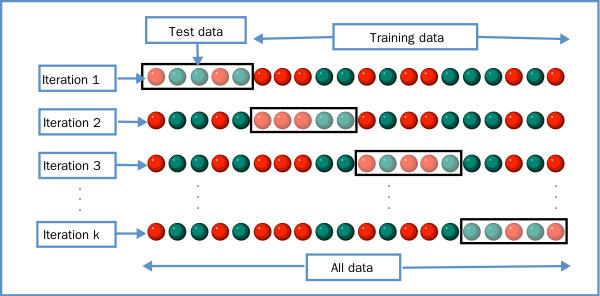

Chapter02 - 04. Model Selection 모듈 소개 (1)
교차 검증
과적합(Overfitting)이란 모델이 학습 데이터에만 과도하게 최적화되어 실제 예측 성능이 과도하게 떨어지는 것을 말한다. 과적합이라는 문제점을 개선하기 위해 교차 검증을 수행한다.
교차 검증은 본고사를 치르기 전에 모의고사를 여러번 보는 것과 같다. 이상치, 분포도, 다향한 속성값, 피처 중요도 등 여러 영향에 의해 생기는 데이터 편중을 막기 위해서 별도의 여러 세트로 구성된 학습 데이터 세트와 검증 데이터 세트에서 학습과 평가를 수행하는 것이다.
K폴드 교차 검증
가장 보편적으로 사용되는 교차 검증 기법이다.
K개의 데이터 폴드 세트를 만들고 K번만큼 각 폴드 세트에 학습과 검증 평가를 반복적으로 수행하는 방법이다.

사이키런에서는 K 폴드 교차 검증 프로세스를 구현하기 위해 KFold와 StratifiedKFold 클래스를 제공한다.
from sklearn.tree import DecisionTreeClassifier
from sklearn.metrics import accuracy_score
from sklearn.model_selection import KFold
import numpy as np
iris = load_iris()
features = iris.data
label = iris.target
dt_clf = DecisionTreeClassifier(random_state=156)
# 5개의 폴드 세트로 분리하는 KFold 객체와 폴드 세트별 정확도를 담을 리스트 객체 생성.
kfold = KFold(n_splits=5)
cv_accuracy = []
print('붓꽃 데이터 세트 크기:',features.shape[0])
【Output】
붓꽃 데이터 세트 크기: 150
전체 붓꽃 데이터는 모두 150개이기 때문에 학습용 데이터 세트는 120개, 검증 테스트 데이터 세트는 30개로 분할된다. KFold객체는 split()을 호출하면 학습용/검증용 데이터로 분할할 수 있는 인덱스를 반환한다.
다음의 예제를 통해 교차 검증 수행 시마다 학습과 검증을 반복해본다.
n_iter = 0
# KFold객체의 split( ) 호출하면 폴드 별 학습용, 검증용 테스트의 로우 인덱스를 array로 반환
for train_index, test_index in kfold.split(features):
# kfold.split( )으로 반환된 인덱스를 이용하여 학습용, 검증용 테스트 데이터 추출
X_train, X_test = features[train_index], features[test_index]
y_train, y_test = label[train_index], label[test_index]
#학습 및 예측
dt_clf.fit(X_train , y_train)
pred = dt_clf.predict(X_test)
n_iter += 1
# 반복 시 마다 정확도 측정
accuracy = np.round(accuracy_score(y_test,pred), 4)
train_size = X_train.shape[0]
test_size = X_test.shape[0]
print('\n#{0} 교차 검증 정확도 :{1}, 학습 데이터 크기: {2}, 검증 데이터 크기: {3}'
.format(n_iter, accuracy, train_size, test_size))
print('#{0} 검증 세트 인덱스:{1}'.format(n_iter,test_index))
cv_accuracy.append(accuracy)
# 개별 iteration별 정확도를 합하여 평균 정확도 계산
print('\n## 평균 검증 정확도:', np.mean(cv_accuracy))
【Output】
#1 교차 검증 정확도 :1.0, 학습 데이터 크기: 120, 검증 데이터 크기: 30 #1 검증 세트 인덱스:[ 0 1 2 3 4 5 6 7 8 9 10 11 12 13 14 15 16 17 18 19 20 21 22 23 24 25 26 27 28 29]
#2 교차 검증 정확도 :0.9667, 학습 데이터 크기: 120, 검증 데이터 크기: 30 #2 검증 세트 인덱스:[30 31 32 33 34 35 36 37 38 39 40 41 42 43 44 45 46 47 48 49 50 51 52 53 54 55 56 57 58 59]
#3 교차 검증 정확도 :0.8667, 학습 데이터 크기: 120, 검증 데이터 크기: 30 #3 검증 세트 인덱스:[60 61 62 63 64 65 66 67 68 69 70 71 72 73 74 75 76 77 78 79 80 81 82 83 84 85 86 87 88 89]
#4 교차 검증 정확도 :0.9333, 학습 데이터 크기: 120, 검증 데이터 크기: 30 #4 검증 세트 인덱스:[ 90 91 92 93 94 95 96 97 98 99 100 101 102 103 104 105 106 107 108 109 110 111 112 113 114 115 116 117 118 119]
#5 교차 검증 정확도 :0.7333, 학습 데이터 크기: 120, 검증 데이터 크기: 30 #5 검증 세트 인덱스:[120 121 122 123 124 125 126 127 128 129 130 131 132 133 134 135 136 137 138 139 140 141 142 143 144 145 146 147 148 149]
##평균 검증 정확도: 0.9
Stratified K 폴드
불균형한(imbalanced) 분포도를 가진 레이블(결정 클래스) 데이터 집합을 위한 K 폴드 방식이다.
예) 대출 사기 데이터 예측 데이터 세트 = 1억 건 수십개의 feature와 대출 사기 여부를 뜻하는 레이블(사기: 1, 정상: 0)로 구성되어있다. 그런데 대부분의 데이터는 정상 대출 일 것이다. 0.0001%의 작은 확률로 대출 사기 레이블이 존재한다면 K폴드로 랜덤하게 학습/테스트 세트 인덱스를 고르더라도 제대로 반영이 안되는 경우가 쉽게 발생한다.
Stratified K 폴드는 원본 데이터의 레이블 분포를 먼저 고려한 뒤 이 분포와 동일하게 학습과 검증 데이터 세트를 분배한다.
import pandas as pd
iris = load iris()
iris_df = pd.DataFrame(data=iris.data, columns=iris.feature_names)
iris_df['label']=iris.target
iris_df['label'].value_counts()
【Output】
2 50
1 50
0 50
레이블 값은 0, 1, 2 모두 50개로 동일하다. Setosa, Versicolor, Virginica 모두 50개 인 것이다. 이슈가 발생하는 현상을 도출하기 위해 3개의 폴드 세트를 KFold로 생성하고 각 교차 검증 시마다 생성되는 학습/검증 레이블 데이터 값의 분포도를 확인해보자.
kfold = KFold(n_splits=3)
n_iter = 0
for train_index, test_index in kfold.split(iris_df):
n_iter += 1
label_train = iris_df['label'].iloc[train_index]
label_test = iris_df['label'].iloc[test_index]
print('## 교차 검증: {0}'.format(n_iter))
print('학습 레이블 데이터 분포:\n', label_train.value_counts())
print('검증 레이블 데이터 분포:\n', label_test.value_counts())
【Output】
## 교차 검증: 1
학습 레이블 데이터 분포:
2 50
1 50
검증 레이블 데이터 분포:
0 50
## 교차 검증: 2
학습 레이블 데이터 분포:
2 50
0 50
검증 레이블 데이터 분포:
1 50
## 교차 검증: 3
학습 레이블 데이터 분포:
1 50
0 50
검증 레이블 데이터 분포:
2 50
교차검증: 1의 경우는 학습 레이블로 1, 2 값이 각각 50개가 추출되고 검증 레이블로 0이 50개 추출되었다. 학습 레이블로는 1, 2밖에 없으므로 0의 경우는 전혀 학습하지 못한다. 반대로 검증 레이블은 0 밖에 없으므로 학습 모델은 0을 예측하지 못한다. 이런 방법으로 데이터 세트를 분할하면 검증 예측도는 0이 될 수 밖에 없다.
StratifiedFold는 이렇게 KFold로 분할된 레이블 데이터 세트가 전체 레이블 값의 분포도를 반영하지 못하는 문제를 해결 할 수 있다.
from sklearn.model_selection import StratifiedFold
skf = StratifiedFold(n_splits=3)
n_iter=0
for train_index, test_index in skf.split(iris_df, iris_df['label']):
n_iter += 1
label_train = iris_df['label'].iloc[train_index]
label_test = iris_df['label'].iloc[test_index]
print('## 교차 검증: {0}'.format(n_iter))
print('학습 레이블 데이터 분포:\n', label_train.value_counts())
print('검증 레이블 데이터 분포:\n', label_test.value_counts())
【Output】
## 교차 검증: 1
학습 레이블 데이터 분포:
2 33
1 33
0 33
검증 레이블 데이터 분포:
2 17
1 17
0 17
## 교차 검증: 2
학습 레이블 데이터 분포:
2 33
1 33
0 33
검증 레이블 데이터 분포:
2 17
1 17
0 17
## 교차 검증: 3
학습 레이블 데이터 분포:
2 34
1 34
0 34
검증 레이블 데이터 분포:
2 16
1 16
0 16
출력 결과를 보면 학습 레이블과 검증 레이블 데이터 값의 분포도가 동일하게 할당 되었음을 볼 수 있다.
다음은 붓꽃 데이터를 StratifiedKFold를 이용해 학습/검증해 본다.
dt_clf = DecisionTreeClassifier(random_state=156)
skfold = StratifiedKFold(n_splits=3)
n_iter=0
cv_accuracy=[]
# StratifiedKFold의 split( ) 호출시 반드시 레이블 데이터 셋도 추가 입력 필요
for train_index, test_index in skfold.split(features, label):
# split( )으로 반환된 인덱스를 이용하여 학습용, 검증용 테스트 데이터 추출
X_train, X_test = features[train_index], features[test_index]
y_train, y_test = label[train_index], label[test_index]
#학습 및 예측
dt_clf.fit(X_train , y_train)
pred = dt_clf.predict(X_test)
# 반복 시 마다 정확도 측정
n_iter += 1
accuracy = np.round(accuracy_score(y_test,pred), 4)
train_size = X_train.shape[0]
test_size = X_test.shape[0]
print('\n#{0} 교차 검증 정확도 :{1}, 학습 데이터 크기: {2}, 검증 데이터 크기: {3}'
.format(n_iter, accuracy, train_size, test_size))
print('#{0} 검증 세트 인덱스:{1}'.format(n_iter,test_index))
cv_accuracy.append(accuracy)
# 교차 검증별 정확도 및 평균 정확도 계산
print('\n## 교차 검증별 정확도:', np.round(cv_accuracy, 4))
print('## 평균 검증 정확도:', np.mean(cv_accuracy))
【Output】
#1 교차 검증 정확도 :0.9804, 학습 데이터 크기: 99, 검증 데이터 크기: 51
#1 검증 세트 인덱스:[ 0 1 2 3 4 5 6 7 8 9 10 11 12 13 14 15 16 50
51 52 53 54 55 56 57 58 59 60 61 62 63 64 65 66 100 101
102 103 104 105 106 107 108 109 110 111 112 113 114 115 116]
#2 교차 검증 정확도 :0.9216, 학습 데이터 크기: 99, 검증 데이터 크기: 51
#2 검증 세트 인덱스:[ 17 18 19 20 21 22 23 24 25 26 27 28 29 30 31 32 33 67
68 69 70 71 72 73 74 75 76 77 78 79 80 81 82 83 117 118
119 120 121 122 123 124 125 126 127 128 129 130 131 132 133]
#3 교차 검증 정확도 :0.9792, 학습 데이터 크기: 102, 검증 데이터 크기: 48
#3 검증 세트 인덱스:[ 34 35 36 37 38 39 40 41 42 43 44 45 46 47 48 49 84 85
86 87 88 89 90 91 92 93 94 95 96 97 98 99 134 135 136 137
138 139 140 141 142 143 144 145 146 147 148 149]
## 교차 검증별 정확도: [0.9804 0.9216 0.9792]
## 평균 검증 정확도: 0.9604
3개의 Stratified K 폴드로 교차 검증한 결과 평균 검증 정확도가 약 96.04%로 측정되었다. 일반적인 분류(Classification)에서의 교차 검증은 K 폴드가 아니라 Stratified K 폴드로 분할되어야 한다.
하지만 회귀(Regression)에서는 Stratified K 폴드가 지원되지 않는다. 그 이유는 회귀의 결정값은 이산값 형태의 레이블이 아니라 연속된 숫자값이기 때문에 결정값별로 분포를 정하는 의미가 없기 때문이다.